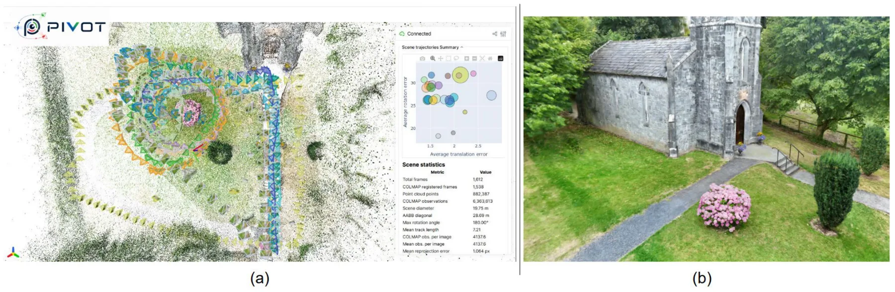
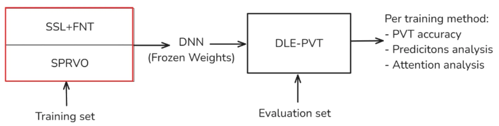
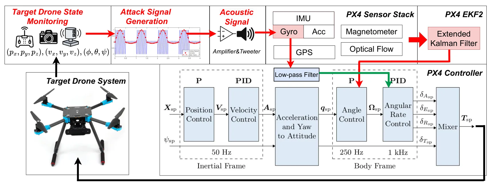

新论文 · 日期 2026-08-26 · score 16 · cs.CV, cs.AI
作者：Mary Raymond
评分 9/10
三维重建3DGSNeRF位姿评测
一句话工作总结：为 NeRF/3DGS 引入更接近真实部署的轨迹、位姿和内参评测，适合检查训练轨迹内插是否掩盖了新轨迹泛化问题。
PIVOT 针对机器人和无人机环境中轨迹、位姿和内参不理想的问题，提供多轨迹采集数据、测量位姿与 COLMAP 优化位姿、标定与优化内参，并评估已见/未见轨迹、位姿来源和内参来源的敏感性。
Neural radiance fields (NeRFs), 3D Gaussian Splatting (3DGS), and related novel-view synthesis methods are commonly evaluated under capture and reconstruction conditions cleaner than those encountered by robot…
新论文 · 日期 2026-08-26 · score 12 · cs.CV
作者：Olaya Álvarez-Tuñón, Stella Graßhof
评分 8/10
水下重建3DGSSfM介质建模
一句话工作总结：受控实验揭示水下重建中介质条件、SfM 注册和光度/几何指标之间的关系，并提供公开代码与评测流程。
论文在不同浑浊度、照明和颜色衰减条件下统一比较五个公开 Gaussian Splatting 系统。清水中 SfM 可注册 99.5% 帧，而 12 NTU 条件下为 0.0%，显示上游几何注册可能先于渲染模型成为瓶颈。
The underwater environment is challenging for 3D reconstruction, because particles suspended in the water scatter and diffuse light, turbidity varies, absorption depends on wavelength, and illumination is rare…

新论文 · 日期 2026-08-27 · score 10 · cs.CV
作者：Yueen Ma, Zenglin Xu, Irwin King
评分 8/10
4DGS动态场景世界模型对象中心
一句话工作总结：将持久三维表示与动作预测连接起来，对动态 SLAM 的对象级地图和预测式规划有启发，但论文标注为 work in progress。
4DGS-WAM 将动态对象与静态背景分开建模，用策略模型预测动作、世界模型预测对象高斯的变换；未来状态复用已观测背景，减少重复生成，并在 KITTI-MOT 上评估短时预测与过去重建。
Current world action models (WAMs) typically operate on 2D visual data. These models can achieve exceptional visual quality, but they lack explicit spatial structure for individual objects and repeatedly proce…

新论文 · 日期 2026-08-26 · score 7 · cs.RO
作者：Thomas Barbero, Bertrand Ekambi
评分 9/10
GNSSPVT多路径抑制自监督学习
一句话工作总结：直接命中城市峡谷和多路径鲁棒定位主题，后续应核查区域隔离、误差分布及与 INS 或因子图融合的兼容性。
方法用监督目标联合预测伪距修正和不确定性，并通过 JEPA 式自监督预训练提升表示质量；在多种驾驶场景中评估泛化，重点缓解密集城市区域的多路径干扰。
This work proposes a Deep Learning Enhanced PVT algorithm to mitigate multipath interference in dense urban areas. A supervised objective jointly predicts range corrections and uncertainty, while a JEPA-based…

新论文 · 日期 2026-08-26 · score 7 · eess.SY, cs.RO
作者：Shaocheng Luo, Ashir Raza, Haocheng Meng, David Hunt
评分 7/10
UAV 安全陀螺仪攻击状态估计闭环控制
一句话工作总结：揭示传感器误差、状态估计和控制闭环的攻击面，对 GNSS/视觉/惯导系统安全评测有提醒意义。
论文研究超声共振引入的低层陀螺误差如何形成姿态估计偏置，并经位置控制环转化为悬停点偏移；在 PX4 风格栈中完成 81 次仿真和 10 余次室内外实验。
UAV displacement attacks have traditionally relied on spoofing sensors that directly report position or translational motion, such as GNSS and optical flow. In this work, we introduce SonicNudge, a new attack…
新论文 · 日期 2026-08-26 · score 7 · cs.CV
作者：Zimin Xia, Mubariz Zaffar, Junsheng Fu, Alexandre Alahi
评分 8/10
视觉定位跨视角匹配地理定位GNSS 替代
一句话工作总结：为城市视觉定位和 GNSS 受限场景提供大规模、跨区域数据，重点价值在于多样性与泛化评测。
OpenCVL 构建覆盖 4 个欧洲国家 41 座城市的 617,388 对地面—航空图像，并通过数据筛选和位姿校正获得可靠的野外图像评测集，另设跨区域和雪景测试集。
Fine-grained Cross-View Localization (CVL) estimates the precise position and orientation of a ground-level image by aligning it with geo-referenced aerial imagery, offering a scalable alternative to Global Na…

新论文 · 日期 2026-08-26 · score 3 · cs.RO
作者：Ho Young Yun, Jaemin Yu, Duksu Kim
评分 7/10
SLAM 点云拓扑图果园导航路径规划
一句话工作总结：展示了从 SLAM 点云到结构化导航图的完整工程链路，适合跟踪半结构化农业环境中的几何先验和规划鲁棒性。
AGRO-Nav 从 SLAM 点云中的树干聚类拟合树行，自动构建行内/行间稀疏拓扑图，用 Dijkstra、Theta* 和三次 B-spline 生成行中心轨迹；实地试验平均误差约 0.08 m，规划速度约为基线的 4–5 倍。
Orchards form semi-structured environments in which parallel tree rows create natural driving corridors, yet narrow inter-row clearance and dense foliage lead geometry-agnostic grid planners to drift off the r…